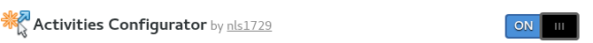
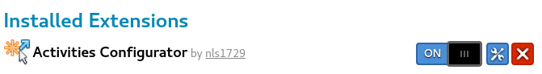

Click (None) then select and open the zip file.
Installation is simple, just slide the switch to ON.
You will be prompted to Cancel or Install. Select Install..

After installation the website can be used to enable, disable, set extension's preferences,
or remove the extension.

Download extension zip file from the extension website zip files.
Gnome Shell Extensions can be installed from an extension zip file with the
gnome-tweak-tool for versions of the Gnome Shell prior to 3.26.
For installation in Gnome Shell version 3.26 and later, the zip file can be installed
manually from a command line prompt ($).
An example for zip file
activities-config@nls1729.v58.shell-extension.zip follows.
To complete the installation.